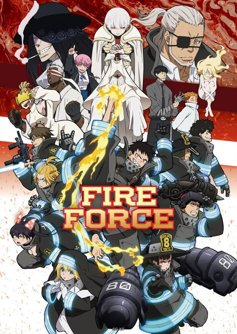
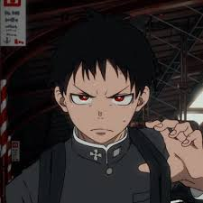
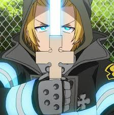
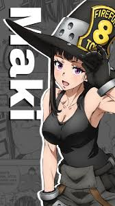

Fire Force
Released: July 6, 2019
Genre: Action, Supernatural, Sci-Fi
In a world plagued by spontaneous human combustion, elite squads known as Fire Forces battle the Infernals. Shinra Kusakabe joins Company 8 to uncover his past and stop the chaos consuming the world.
Fire Force blends explosive animation with deep worldbuilding and fiery action from the creator of Soul Eater.
Cast

Shinra
Voice: Gakuto Kajiwara

Arthur
Voice: Yusuke Kobayashi

Maki
Voice: Saeko Kamijo
Tamaki
Voice: Aoi Yuki